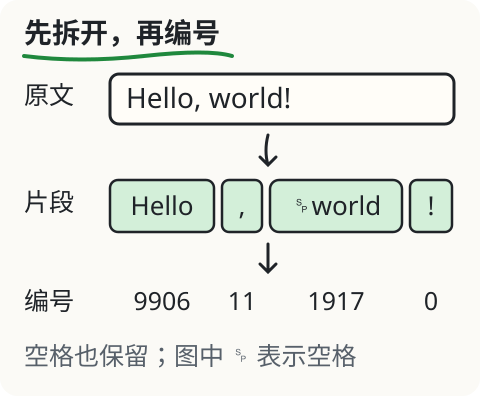

文字怎样变成模型的输入？
“今天天气真不错！”有几个字？你可以数出来。但模型处理的单位不一定跟汉字对齐。打开下面的实验，切换两种编码，看看同一句话的 token 数有没有变化。
先看一眼，再动手
分词器把文本编码成一串编号，每个编号叫 token ID。编号只在对应的词表里有意义。它可能对应一个常见词、一部分单词、标点、空格，也可能只是一个字符的部分字节。
这页使用四组固定输入的真实编码快照。选“英文与空格”，注意 world 前面的空格有没有跟后面的文字分在一起。再选“生僻字与 emoji”，查看不能单独显示成字的片段。

拆开一段文字
选同一句话，换一种编码。点片段查看 ID 与原始字节。
␠ 表示空格，↵ 表示换行；连接符会标明名称，独立组合标记加 ◌ 帮助显示。这些提示符不改原始字节。不能独立组成字符的 token 显示为“字节片段”。
锁定文本的本地编码快照，不运行语言模型；两种编码不代表所有模型。
为什么有的片段显示不成字？
电脑用 UTF-8 字节存放这些文字。一个汉字或 emoji 往往要用多个字节，有时一个 token 只覆盖其中一部分。这时单独解码就不完整，不能把显示出的替代字符当成原文。
实验为这类 token 写了“字节片段”，并列出十六进制字节。把所有 token 的字节按顺序接回去，就能无损还原原文。这里保留了空格和换行，它们也是输入的一部分。
图里展示“原文→编码片段→ID”。编号较近，不表示意思较近；接下来的模型计算会用编号查找学得的数字向量，ID 本身不是词义分数。
改一个条件
保持句子不变，只切换 cl100k_base 和 o200k_base。这两种编码有不同词表和切分规则，所以编号、片段数都可能不同。同一套模型的输入必须使用它匹配的编码，不能任意拿另一套 ID 替换。
本实验只比较四组输入，不提供自由输入框，以免把预置结果误看成当场处理了任何句子。你可以展开每个片段，看它的编号与字节。
字数、字节数和 token 数，各管什么？
- 页面里的“Unicode 码点数”按码点计数，不等于视觉上看到的字形数量。一个带肤色和职业的 emoji 可以由多个码点组成。
- “UTF-8 字节数”表示这段文字编码后的长度。
- “token 数”由所选分词器决定。上下文窗口和很多文本接口的计量以它为单位。
只数汉字不能精确预估 token 用量。真实接口还可能加入对话格式、工具定义或其他输入内容；本页只计算所选的原始字符串，不包含这些额外结构。
用到工作里
如果你要让模型读一份长文，先查看所用模型和接口的输入限制，给回答留出空间。材料超长时，按实际任务挑相关段落或分步处理。不要为了少几个 token，就把决定答案的条件和日期删掉。
再深一层
这些快照由锁定版本的本地编码器生成；每种编码附有 rank 数据的哈希。执行 npm run check:fixtures:llm 会重新编码、比较 ID，并把片段字节拼回原文。这里观察的是编码结果，不是语言模型在“理解”这句话时的内部活动。